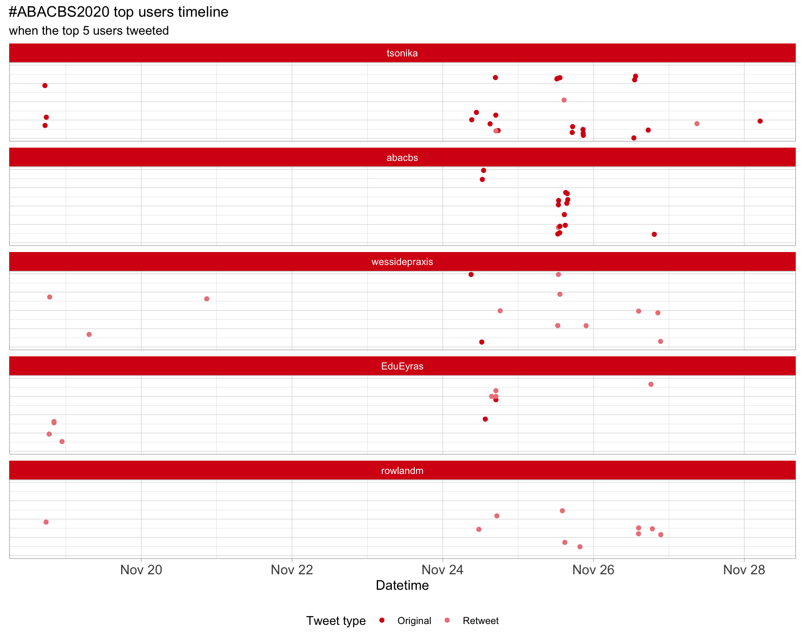
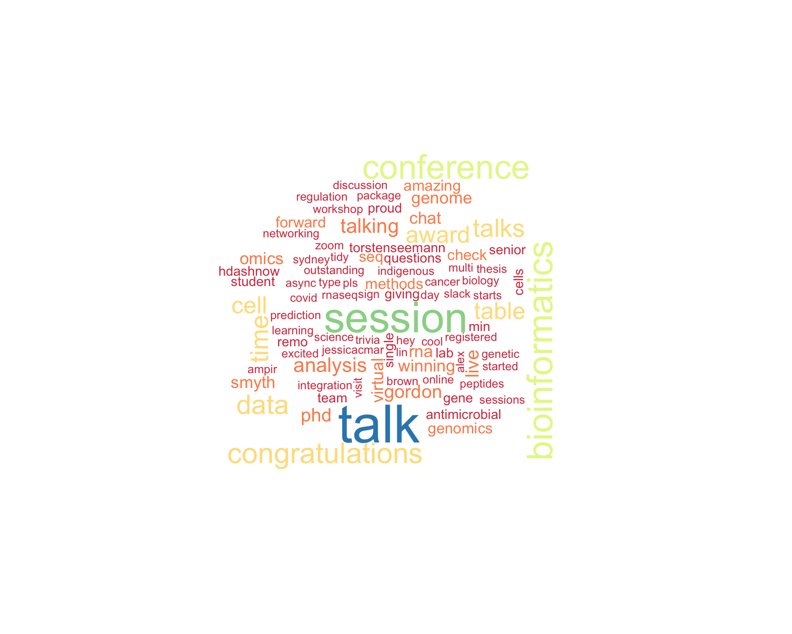

ABACBS2020
ABACBS Conference 2020
Last built: 2020-11-28 09:10:34
| Parameter | Value |
|---|---|
| hashtag | #ABACBS2020 |
| start_day | 2020-11-24 |
| end_day | 2020-11-26 |
| timezone | Australia/Sydney |
| theme | theme_light |
| accent | #d70a14 |
| accent2 | #EB8489 |
| kcore | 2 |
| topics_k | 6 |
| bigram_filter | 3 |
| fixed | TRUE |
| seed | 1 |
Introduction
An analysis of tweets for the query #ABACBS2020 related to ABACBS Conference 2020 held virtually from 2020-11-24 to 2020-11-26. A total of 301 tweets from 125 users were collected using the {rtweet} R package.
1 Timeline
1.1 Tweets by day
1.2 Tweets by day and time
Filtered for dates 2020-11-24 - 2020-11-26 in the Australia/Sydney timezone.
2 Users
2.1 Top tweeters
Overall
Original
Retweets
2.2 Retweet proportion
2.3 Top tweeters timeline

2.4 Top tweeters by day
Overall
Day 1
Day 2
Day 3
Original
Day 1
Day 2
Day 3
Retweets
Day 1
Day 2
Day 3

3 Sources
Users
Tweets
4 Networks
4.1 Replies
The “replies network”, composed from users who reply directly to one another, coloured by PageRank.
4.2 Mentions
The “mentions network”, where users mention other users in their tweets. Filtered for a k-core of 2. Node colour and size adjusted according to PageRank score.
5 Tweet types
5.1 Retweets
Proportion
Count

Top 10
| screen_name | text | retweet_count |
|---|---|---|
| WEHI_research |
Congratulations to bioinformatics researchers Professor Gordon Smyth, who has been awarded an @ABACBS Honorary Senior Fellowship, and @MRitchieAu who won the Open Science Open Source Award at #abacbs2020 https://t.co/4AqBtVHABN https://t.co/q93NnUXEP8 |
15 |
| NhiHin |
The tidy RNA-seq analysis workshop at #ABACBS2020 is just ü§Ø Very different workflow to what I‚Äôm used to, but a lot of convenient wrapper functions. Keen to try the Bulk RNAseq cell type deconvolution on my own data later ‚¨áÔ∏è https://t.co/pBNN9ISZ0H #Bioinformatics https://t.co/Ok1lLVlEhW |
13 |
| BelindaPhipson | Congratulations to Prof Gordon Smyth on his #ABACBS2020 senior researcher award. I have never come across another researcher as knowledgeable in statistics and computing as he is and I learnt so much during my time as an RA and later as a PhD student with him. | 13 |
| wessidepraxis | #ABACBS2020 Day 1 starts in a couple of hours! If you havent registered already, make sure you sign up (https://t.co/xTozRiCii1). If you have registered, make sure you’ve signed up to our ABACBS2020 slack team to follow all the discussion | 8 |
| tsonika | .@mritchieau is the next in the list of awardees!! Huge congratulations! #ABACBS2020 https://t.co/TCJ4Y8bsyV | 6 |
| tsonika | Day2 of #ABACBS2020 starts with a parallel session on PhylOVID with the first keynote talk by @torstenseemann If you have questions for him send to us via twitter/slack or live in the zoom chat! https://t.co/kKkei08eIH | 6 |
| NhiHin | Excited to see all the innovation in single cell RNAseq at #abacbs2020! Enjoyed @fabiousername’s introduction of Northstar to address the time-consuming task of classifying cells in scRNAseq data while preserving novel cell populations https://t.co/Hhh8FniWGI #bioinformatics https://t.co/XR5tpNPlU6 | 6 |
| NhiHin |
Visualising cell clusters in scRNA-seq data in 3D! ü§© From Part 2 of the #ABACBS2020 Tidy Transcriptomics workshop by @steman_research and @mard113 which uses tidyseurat to bring tidyverse functionality to Seurat: https://t.co/cfiCKEkh9b #Bioinformatics @plotlygraphs https://t.co/qqn9nMnzou |
6 |
| AliciaOshlack | Wonderful to see my former PhD student @hdashnow be awarded the outstanding PhD prize in bioinformatics and computation biology by @abacbs. Excellent recognition of a wonderful student #proud #abacbs2020 | 6 |
| tsonika |
Another provoking talk in the session with an extremely important message by @ee_reh_neh Southeast Asia makes 80% of the world’s population but their genetic information is highly represented in global; genetic databanks. #ABACBS2020 https://t.co/eqwrUvBfFz |
5 |
Most retweeted
5.2 Likes
Proportion
Count
Top 10
| screen_name | text | favorite_count |
|---|---|---|
| NhiHin |
The tidy RNA-seq analysis workshop at #ABACBS2020 is just ü§Ø Very different workflow to what I‚Äôm used to, but a lot of convenient wrapper functions. Keen to try the Bulk RNAseq cell type deconvolution on my own data later ‚¨áÔ∏è https://t.co/pBNN9ISZ0H #Bioinformatics https://t.co/Ok1lLVlEhW |
105 |
| WEHI_research |
Congratulations to bioinformatics researchers Professor Gordon Smyth, who has been awarded an @ABACBS Honorary Senior Fellowship, and @MRitchieAu who won the Open Science Open Source Award at #abacbs2020 https://t.co/4AqBtVHABN https://t.co/q93NnUXEP8 |
97 |
| BelindaPhipson | Congratulations to Prof Gordon Smyth on his #ABACBS2020 senior researcher award. I have never come across another researcher as knowledgeable in statistics and computing as he is and I learnt so much during my time as an RA and later as a PhD student with him. | 85 |
| AliciaOshlack | Wonderful to see my former PhD student @hdashnow be awarded the outstanding PhD prize in bioinformatics and computation biology by @abacbs. Excellent recognition of a wonderful student #proud #abacbs2020 | 77 |
| tsonika | Congratulations to my PhD student @_tyronechen @tyagilab @MonashBiol @Monash_Science for winning the best Async Talk award @abacbs conference 2020 #ABACBS2020 #proudsupervisor | 35 |
| NhiHin | Amazing insights on the integration of omics data from @mixOmics_team at #abacbs2020. Data integration is emerging as a major challenge in #Bioinformatics in recent years and it is incredible to see how far we have come with approaches like DIABLO https://t.co/vaZIBK5lft @abacbs https://t.co/d8jytJSpgA | 35 |
| MarioniLab | Huge congratulations to our post-doc @_andrianyang for winning the Outstanding PhD Thesis Award from the Australian Bioinformatics and Computational Biology Society overnight! #abacbs2020 @joshuawkho | 28 |
| abacbs | Thanks everyone for making #abacbs2020 such an amazing event. Special thanks goes to the organising committee and @EduEyras and @koadman for doing a fantastic job. | 28 |
| davisjmcc |
Wait, for #abacbs2020 you need to have watched all of the talks beforehand? Even the “live sessions” won’t be any live talks? Oh no…. https://t.co/doTmphKvnO |
28 |
| tsonika | Day2 of #ABACBS2020 starts with a parallel session on PhylOVID with the first keynote talk by @torstenseemann If you have questions for him send to us via twitter/slack or live in the zoom chat! https://t.co/kKkei08eIH | 27 |
Most likes
5.3 Quotes
Proportion
Count
Top 10
| screen_name | text | quote_count |
|---|---|---|
| tsonika | Day1 of @abacbs virtual conference today #abacbs2020 https://t.co/lItz6OiER1 | 2 |
| JiaZhou0116 | Amazing talks for metagenomics session this morning #abacbs2020 https://t.co/bk1whnH99u | 2 |
| LonsBio | Still a good joke #abacbs2020 https://t.co/3lAqKlHdxv | 1 |
| tsonika | The countdown has started! #ABACBS2020 https://t.co/VIYCrUD3NS | 1 |
| tsonika | Make sure to sign up for Talks, social cafe and trivia night via @use_remo #ABACBS2020 https://t.co/C1sTLU8ouK | 1 |
| slimsuite | Hear about some of our snake, starling, and waratah genomics research at #ABACBS2020, all from the comfort of your own home/office/wherever. https://t.co/9xBPJQH5jT | 1 |
| fredjaya1 | Mandatory etch-a-sketchs per table in irl conferences #abacbs2020 https://t.co/Ce6djypSmo | 1 |
| LeganaFingerhut | Hey #ABACBS2020! You can find me in Remo, table 24 in an hour (1:30 AEDT). Come chat to me about antimicrobial peptides or developing R packages or using machine learning in biology! https://t.co/R2jRaYXGtz https://t.co/T8nXLawY2s | 1 |
| ramialison_lab | Congratulations to our very own @GulrezChahal for presenting at @abacbs #abacbs2020 https://t.co/FfUgWgFUA3 | 1 |
| tsonika | Looking forward! enjoyed your pre-recorded video! #abacbs2020 https://t.co/DxzZdSFbfR | 1 |
Most quoted
6 Media
Proportion
Top 10
| screen_name | text | favorite_count |
|---|---|---|
| NhiHin |
The tidy RNA-seq analysis workshop at #ABACBS2020 is just ü§Ø Very different workflow to what I‚Äôm used to, but a lot of convenient wrapper functions. Keen to try the Bulk RNAseq cell type deconvolution on my own data later ‚¨áÔ∏è https://t.co/pBNN9ISZ0H #Bioinformatics https://t.co/Ok1lLVlEhW |
105 |
| WEHI_research |
Congratulations to bioinformatics researchers Professor Gordon Smyth, who has been awarded an @ABACBS Honorary Senior Fellowship, and @MRitchieAu who won the Open Science Open Source Award at #abacbs2020 https://t.co/4AqBtVHABN https://t.co/q93NnUXEP8 |
97 |
| NhiHin | Amazing insights on the integration of omics data from @mixOmics_team at #abacbs2020. Data integration is emerging as a major challenge in #Bioinformatics in recent years and it is incredible to see how far we have come with approaches like DIABLO https://t.co/vaZIBK5lft @abacbs https://t.co/d8jytJSpgA | 35 |
| davisjmcc |
Wait, for #abacbs2020 you need to have watched all of the talks beforehand? Even the “live sessions” won’t be any live talks? Oh no…. https://t.co/doTmphKvnO |
28 |
| tsonika | Day2 of #ABACBS2020 starts with a parallel session on PhylOVID with the first keynote talk by @torstenseemann If you have questions for him send to us via twitter/slack or live in the zoom chat! https://t.co/kKkei08eIH | 27 |
| wessidepraxis | #abacbs2020 is live in Adelaide üéâ https://t.co/NeY6VzZjuZ | 26 |
| tsonika | #abacbs2020 Congratulations to @markjcowley and @jessicacmar üëè https://t.co/C9EVBtALMG | 24 |
| tsonika | .@mritchieau is the next in the list of awardees!! Huge congratulations! #ABACBS2020 https://t.co/TCJ4Y8bsyV | 22 |
| NhiHin | Excited to see all the innovation in single cell RNAseq at #abacbs2020! Enjoyed @fabiousername’s introduction of Northstar to address the time-consuming task of classifying cells in scRNAseq data while preserving novel cell populations https://t.co/Hhh8FniWGI #bioinformatics https://t.co/XR5tpNPlU6 | 20 |
| NhiHin |
Visualising cell clusters in scRNA-seq data in 3D! ü§© From Part 2 of the #ABACBS2020 Tidy Transcriptomics workshop by @steman_research and @mard113 which uses tidyseurat to bring tidyverse functionality to Seurat: https://t.co/cfiCKEkh9b #Bioinformatics @plotlygraphs https://t.co/qqn9nMnzou |
20 |
6.1 Most liked image

7 Tweet text
7.1 Word cloud
The top 100 words used 3 or more times.

7.3 Emojis
7.4 Bigram graph
Words that were tweeted next to each other at least 3 times.
7.5 Topic modelling
Top 10 words associated with 6 topics identified by LDA.
7.5.1 Representative tweets
Most representative tweets for each topic
Topic 1
| screen_name | text | gamma |
|---|---|---|
| TeamVCGS | Our Head of Clinical Bioinformatics Dr Simon Sadedin is presenting at the @abacbs conference, on his work exploring models to improve accuracy of detecting copy number variants in exomes. Registered for the conference? Don’t miss Simon’s talk at 15.20 AEST on 25 Nov. #ABACBS2020 | 0.9957013 |
| LeganaFingerhut | #abacbs2020 has started! You can view my 16 min talk on ampir: an R package for fast genome-wide prediction of antimicrobial peptides at https://t.co/HuViMHAL5Y and my 10 min discussion / Q&A time is tomorrow (Wednesday 25th Nov) at 15:30 AEDT @abacbs | 0.9952942 |
| tsonika | Day2 of #ABACBS2020 starts with a parallel session on PhylOVID with the first keynote talk by @torstenseemann If you have questions for him send to us via twitter/slack or live in the zoom chat! https://t.co/kKkei08eIH | 0.9938345 |
| abacbs | Next up, its time to get extremely jealous of Legana (JCU) who is presenting from beautiful North Queensland! “ampir: an R package for fast genome-wide prediction of antimicrobial peptides”. #abacbs2020 | 0.9938345 |
| LeganaFingerhut | Hey #ABACBS2020! You can find me in Remo, table 24 in an hour (1:30 AEDT). Come chat to me about antimicrobial peptides or developing R packages or using machine learning in biology! https://t.co/R2jRaYXGtz https://t.co/T8nXLawY2s | 0.9934267 |
| wessidepraxis | #ABACBS2020 Day 1 starts in a couple of hours! If you havent registered already, make sure you sign up (https://t.co/xTozRiCii1). If you have registered, make sure you’ve signed up to our ABACBS2020 slack team to follow all the discussion | 0.9929612 |
| LonsBio | Pleased that the virtual format has retained the traditional of the best talk winner from @combine_au from #combine2020 giving a talk at #abacbs2020 - congratulations @renzobalb | 0.9917996 |
| technadele | Not sure a real ü¶á has ever been on the #abacbs2020 conference bingo. @LeganaFingerhut breaking new ground here as she talks about ampir - an antimicrobial peptide genome prediction R package | 0.9917996 |
| koadman | Jamming out to science this morning, listening to #ABACBS2020 talks on https://t.co/mqb3MByZSp. Stunning how much strong bioinformatics work is happening here in Aus. | 0.9910621 |
| StevenJMorg | If you’re at #ABACBS2020, don’t miss @loic_thibaut’s talk. I really appreciated the overview of gene intolerance metrics and how powerSFS stacks up @abacbs https://t.co/XicfTPGnJu | 0.9910621 |
Topic 2
| screen_name | text | gamma |
|---|---|---|
| Ahmed_Microbes | That moment when it’s Philly sleep time & you see a tweet about #ABACBS2020 & you hit the link to join & found myself assigned to a random virtual table with the lovely @torstenseemann who introduced/trained me on microbial genomics 7 years ago & chat for 15 min. 2020 is smiling. | 0.9957013 |
| mdziemann | Just finished up 90 hrs of intensive lab based teaching over the past 3 weeks, completing experiments initially scheduled for March and April Unfortunately I missed #abacbs2020 :( but looking forward to getting back to research next week | 0.9945151 |
| BelindaPhipson | Congratulations to Prof Gordon Smyth on his #ABACBS2020 senior researcher award. I have never come across another researcher as knowledgeable in statistics and computing as he is and I learnt so much during my time as an RA and later as a PhD student with him. | 0.9938345 |
| AliciaOshlack | Wonderful to see my former PhD student @hdashnow be awarded the outstanding PhD prize in bioinformatics and computation biology by @abacbs. Excellent recognition of a wonderful student #proud #abacbs2020 | 0.9938345 |
| WEHI_research |
Congratulations to bioinformatics researchers Professor Gordon Smyth, who has been awarded an @ABACBS Honorary Senior Fellowship, and @MRitchieAu who won the Open Science Open Source Award at #abacbs2020 https://t.co/4AqBtVHABN https://t.co/q93NnUXEP8 |
0.9938345 |
| allPowerde | Thank you @abacbs for the recognition of the unique #Bioinformatics work the @TBioinf group is doing. Congratulations also to the other #abacbs2020 award recipients: Gordon Smyth, @hdashnow, Adrian Yang, Yu Lin, @jessicacmar, @markjcowley, and @mritchieau. https://t.co/Vs62lN39nd | 0.9938345 |
| AusBiocommons | Looking forward to #ABACBS2020 this week! We’re proud to sponsor Aussie bioinformatics on show (online) and hope to connect for a chat. Thanks @abacbs for the ‘booth’ - pls come and say hello during the networking sessions! https://t.co/dMHzg2IX3Q | 0.9934267 |
| tsonika | Alex Brown is giving a very inspiring talk on indigenous genomics needing its due attention, and how bioinformatics can help fill the gap!! #ABACBS2020 https://t.co/FZ7PRKnLVR | 0.9924247 |
| markjcowley | Many congratulations to all the very worthy #abacbs2020 award winners, Gordon Smyth, @jessicacmar, @allPowerde @mritchieau, Yu Lin, @hdashnow, Adrian Yang | 0.9917996 |
| KandhariNitika | “Finding signatures of alternative polyadenylation as cancer biomarkers”- Let’s catch up over coffee at Table #120 in #liveremo #networking #abacbs2020 | 0.9910621 |
Topic 3
| screen_name | text | gamma |
|---|---|---|
| NhiHin | Excited to see all the innovation in single cell RNAseq at #abacbs2020! Enjoyed @fabiousername’s introduction of Northstar to address the time-consuming task of classifying cells in scRNAseq data while preserving novel cell populations https://t.co/Hhh8FniWGI #bioinformatics https://t.co/XR5tpNPlU6 | 0.9957013 |
| fredjaya1 | Hey #ABACBS2020 - Let’s have a chat on Table #57 on all things viral recombination, non-model, or how Arya Stark’s character development was slept on in season 2. You can check out my 5 min talk on https://t.co/ZeroZdvgcJ | 0.9938345 |
| dr_njarmstrong | Seriously considering booking myself into a local hotel for the next virtual conference - end of semester marking and kids play havoc with good intentions of attending live sessions… #ABACBS2020 | 0.9929612 |
| abacbs | Yingxin Lin is up next talking about transfer learning methods for data integration of single-cell RNA-seq and ATAC-seq. #abacbs2020 | 0.9929612 |
| danielagaiagaio | immune-mediated diseases & microbiome: STOP looking at single-omics data (when you have n>1 omics dataset) @abacbs #abacbs2020 https://t.co/QJ8nVwKLG2 | 0.9917996 |
| hani_jieun | Another exciting method from @LinYingxin to integrate #scRNAseq and #ATACseq data! Check out her talk at #abacbs2020 https://t.co/7Mv4uKi7ZI https://t.co/cvC1u10Urv | 0.9901788 |
| Katarina_Stuart | Am growing to love online conferences, and all the things I can do while listening to the talks. I’ve never been so on top of my folding and ironing… #ABACBS2020 | 0.9891019 |
| tsonika | Virtually at the Canberra cafe via @use_remo before the program for day1 starts at @abacbs #ABACBS2020 https://t.co/B0JcDBiBls | 0.9877596 |
| _tyronechen | If you are interested in multi-omics data harmonisation, visit table 19 at #abacbs2020 for more information @tyagilab https://t.co/1WghjcdDPA | 0.9877596 |
| abacbs | Local legend @Feargal_Ryan now talking about Microbiota and Whole-blood Transcriptional Responses to Immunisation #ABACBS2020 | 0.9877596 |
Topic 4
| screen_name | text | gamma |
|---|---|---|
| tsonika |
Another provoking talk in the session with an extremely important message by @ee_reh_neh Southeast Asia makes 80% of the world’s population but their genetic information is highly represented in global; genetic databanks. #ABACBS2020 https://t.co/eqwrUvBfFz |
0.9948019 |
| davisjmcc |
@Psy_Fer_ Haven’t tried out Remo yet (again with time crunch issues for me), but it looks cool; I like the idea a lot. Overall, I absolutely commend the #abacbs2020 organisers for thinking hard about how to make an online conference work better. Some issues remain, but a great effort! |
0.9945151 |
| methylnick | @abacbs #abacbs2020 looks to be a great meeting with all (most?) content up and available for delegates. Won’t be able to concentrate on work now. But I spy LongReads session which is the first! Sign of the times maybe? @nanopore @PacBio @bionanogenomics #notonlyabioinformatician https://t.co/oHVj9Ibgso | 0.9934267 |
| abacbs | Great talk from Harman Singh on “eMST, a scalable and interpretable method for Phylogenetic analysis of hundreds and thousands of SARS-CoV-2 genomes”. Great visualisations #abacbs2020 | 0.9934267 |
| abacbs | Next up in the Methods session is Simon Sadedin talking about Exome sequencing in genetic testing and exploring Neural Network models for CNV detection #abacbs2020 | 0.9934267 |
| angel_bee2018 | In a short while, at 1:40pm Sydney time today I will be on table #49 at #ABACBS2020 Come along for discussion if you are interested in RNA splicing or stem cells/differentiation | 0.9910621 |
| tsonika | Session 3 on regulation has begun. Our keynote speaker @ppgardne is giving a talk on Functional Genes features. @abacbs #ABACBS2020 https://t.co/J4nddxg7fO | 0.9910621 |
| danielagaiagaio | Last-minute catching up on async talks üôà @ABACBS #ABACBS2020 A very cool and very well structured virtual conference! https://t.co/3CTqAEo1F6 | 0.9891019 |
| fredjaya1 | Tuning in to the legendary Felsenstein at the #phylomania2020 Sydney hub! Same room as last years #abacbs2020 talks, different conference. https://t.co/90wxVNoUJ7 | 0.9891019 |
| tsonika | Make sure to sign up for Talks, social cafe and trivia night via @use_remo #ABACBS2020 https://t.co/C1sTLU8ouK | 0.9877596 |
| PNgsabrina | Sad to missed this year’s #ABACBS2020 but looking forward to checking out this really cool workflow https://t.co/cS5UPNWsp6 | 0.9877596 |
Topic 5
| screen_name | text | gamma |
|---|---|---|
| NhiHin |
Visualising cell clusters in scRNA-seq data in 3D! ü§© From Part 2 of the #ABACBS2020 Tidy Transcriptomics workshop by @steman_research and @mard113 which uses tidyseurat to bring tidyverse functionality to Seurat: https://t.co/cfiCKEkh9b #Bioinformatics @plotlygraphs https://t.co/qqn9nMnzou |
0.9950603 |
| NhiHin | Amazing insights on the integration of omics data from @mixOmics_team at #abacbs2020. Data integration is emerging as a major challenge in #Bioinformatics in recent years and it is incredible to see how far we have come with approaches like DIABLO https://t.co/vaZIBK5lft @abacbs https://t.co/d8jytJSpgA | 0.9945151 |
| cabbagesofdoom | At #ABACBS2020? Come visit @Katarina_Stuart at table 106 today: Whole transcripts in genome assembly, annotation, and assessment: the draft genome assembly of the globally invasive common starling, Sturnus vulgaris https://t.co/5b2src6Fs7 | 0.9941947 |
| MarioniLab | Huge congratulations to our post-doc @_andrianyang for winning the Outstanding PhD Thesis Award from the Australian Bioinformatics and Computational Biology Society overnight! #abacbs2020 @joshuawkho | 0.9938345 |
| tsonika | .@wessidepraxis asked Gordon about the secret of successful Bioinformatics group. Gordon: invest in young Bioinformatics group leader. When he started at WEHI he had no track record in medicine as he came from mathematics background. #abacbs2020 | 0.9934267 |
| RentinoAnn | @mariebal22 Dba noh…kahit walang franchise d Nila mapigilan Ang kapamilya kc da best talaga Ang #abacbs2020 | 0.9929612 |
| StevenJMorg | Read length and variant caller influence the number of pesky recurrent miscalls üòà when using short-read data. From @mattfield100 #ABACBS2020 @abacbs https://t.co/NytYxgCAd0 | 0.9924247 |
| tyagilab |
Heartiest Congratulations to @_tyronechen for winning the best Async Talk Award at the #ABACBS2020 conference! We are all very proud of you!! @tsonika @MonashBiol @Monash_Science #tyagilab #phdchat #AcademicTwitter https://t.co/lsoFcjFv2b |
0.9924247 |
| abacbs | Ok so now the bat-less @tpq__ talking about the vary sharply named “HyperXpair” (the Hyper-parameter eXplainable Motif Pair framework) #abacbs2020 | 0.9917996 |
| tsonika | @abacbs Suite of software form the Smyth lab. edgeR was being developed before RNAseq became available (for CAGE analysis) #ABACBS2020 https://t.co/GOoW0lHQmD | 0.9910621 |
| linsalrob | First up in day 2 of #abacbs2020 is @torstenseemann describing the heroic work of the team to sequence every #COVID19 isolate in Australia and the implications for #publichealth | 0.9910621 |
| tsonika | Congratulations to my PhD student @_tyronechen @tyagilab @MonashBiol @Monash_Science for winning the best Async Talk award @abacbs conference 2020 #ABACBS2020 #proudsupervisor | 0.9910621 |
Topic 6
| screen_name | text | gamma |
|---|---|---|
| Clara_J_Jiang | I will be giving a talk titled “Integrated transcription factor profiling with transcriptome analysis: identification of L1PA2 transposons as global regulatory modulators in a breast cancer model” at #ABACBS2020! Check out the pre-recorded talk here https://t.co/V8pcrErvU9 | 0.9957013 |
| NhiHin |
The tidy RNA-seq analysis workshop at #ABACBS2020 is just ü§Ø Very different workflow to what I‚Äôm used to, but a lot of convenient wrapper functions. Keen to try the Bulk RNAseq cell type deconvolution on my own data later ‚¨áÔ∏è https://t.co/pBNN9ISZ0H #Bioinformatics https://t.co/Ok1lLVlEhW |
0.9950603 |
| paulfharrison | @KandhariNitika in Traude Beilharz’s lab, talking about alternative polyadenylation in cancer cell lines with gene-knockouts of RNA cleavage machinery. Pooling data produces more results! #abacbs2020 https://t.co/9sGI3LYuqN | 0.9948019 |
| xiaotuhuihui | In Tidy Transcriptomics workshop, Maria Doyle talked about bulk RNA-seq analysis, cell type deconvolution and differential abundance analysisüëç#abacbs2020 https://t.co/gV9vrflFX3 | 0.9941947 |
| cabbagesofdoom | Come visit Stephanie at table 38 today! #ABACBS2020: Unsupervised orthologous gene tree enrichment for cost-effective phylogenomic analysis and a test case on waratahs (Telopea spp.) https://t.co/iUhkcpJd86 | 0.9941947 |
| Clara_J_Jiang |
#ABACBS2020 is on now! Come check out my talk in the “Regulation” section :) Integrated transcription factor profiling with transcriptome analysis: identification of L1PA2 transposons as… https://t.co/V8pcrEJ6LH |
0.9929612 |
| cabbagesofdoom | If you are at #ABACBS2020, come and talk to Jack at Remo table 119: The role of gene duplication in the evolution of snake venoms https://t.co/M0RSuISCdR | 0.9910621 |
| cabbagesofdoom | I love the way that the #ABACBS2020 author affiliations start counting at 0. Nice binfie touch there, @abacbs | 0.9877596 |
| tsonika | You can upload your slides/poster to @abacbs collection on @F1000Research too #ABACBS2020 https://t.co/nMVgUfq675 https://t.co/6AKBr1EeeO | 0.9860403 |
| SWbioinf | Keen to try out propeller tool for comparing cell type proportion changes being presented now by @BelindaPhipson at #ABACBS2020 | 0.9860403 |
8 Links
Links to GitHub, GitLab, BitBucket, Bioconductor or CRAN mentioned in Tweets.
| Name | Tweets | Retweets | Type | Link |
|---|---|---|---|---|
| tidybulk.html | 1 | 0 | Bioc | bioconductor.org/packages/tidybulk.html |
| tidyseurat | 1 | 0 | CRAN | CRAN.R-project.org/package=tidyseurat |
Session info
## R version 4.0.0 (2020-04-24)
## Platform: x86_64-apple-darwin17.0 (64-bit)
## Running under: macOS Catalina 10.15.7
##
## Matrix products: default
## BLAS: /Library/Frameworks/R.framework/Versions/4.0/Resources/lib/libRblas.dylib
## LAPACK: /Library/Frameworks/R.framework/Versions/4.0/Resources/lib/libRlapack.dylib
##
## locale:
## [1] en_US.UTF-8/en_US.UTF-8/en_US.UTF-8/C/en_US.UTF-8/en_US.UTF-8
##
## attached base packages:
## [1] stats graphics grDevices utils datasets methods base
##
## other attached packages:
## [1] fs_1.5.0 here_0.1 kableExtra_1.3.1 knitr_1.30
## [5] magick_2.5.2 webshot_0.5.2 viridis_0.5.1 viridisLite_0.3.0
## [9] wordcloud_2.6 RColorBrewer_1.1-2 ggtext_0.1.0 ggraph_2.0.3
## [13] ggrepel_0.8.2 ggplot2_3.3.2 emo_0.0.0.9000 rvest_0.3.6
## [17] xml2_1.3.2 topicmodels_0.2-11 tidytext_0.2.6 igraph_1.2.6
## [21] stringr_1.4.0 purrr_0.3.4 forcats_0.5.0 lubridate_1.7.9.2
## [25] tidyr_1.1.2 dplyr_1.0.2 rtweet_0.7.0 clamour_0.1.0
##
## loaded via a namespace (and not attached):
## [1] bitops_1.0-6 usethis_1.6.3 httr_1.4.2 rprojroot_2.0.2
## [5] SnowballC_0.7.0 tools_4.0.0 utf8_1.1.4 R6_2.5.0
## [9] colorspace_2.0-0 withr_2.3.0 tidyselect_1.1.0 gridExtra_2.3
## [13] processx_3.4.4 curl_4.3 compiler_4.0.0 cli_2.2.0
## [17] NLP_0.2-1 labeling_0.4.2 slam_0.1-47 scales_1.1.1
## [21] tm_0.7-7 callr_3.5.1 askpass_1.1 digest_0.6.27
## [25] rmarkdown_2.5 pkgconfig_2.0.3 htmltools_0.5.0 highr_0.8
## [29] rlang_0.4.8 rstudioapi_0.13 farver_2.0.3 generics_0.1.0
## [33] jsonlite_1.7.1 tokenizers_0.2.1 RCurl_1.98-1.2 magrittr_2.0.1
## [37] modeltools_0.2-23 Matrix_1.2-18 Rcpp_1.0.5 munsell_0.5.0
## [41] fansi_0.4.1 lifecycle_0.2.0 stringi_1.5.3 yaml_2.2.1
## [45] MASS_7.3-53 plyr_1.8.6 grid_4.0.0 parallel_4.0.0
## [49] crayon_1.3.4 lattice_0.20-41 graphlayouts_0.7.1 gridtext_0.1.1
## [53] ps_1.4.0 pillar_1.4.7 markdown_1.1 reshape2_1.4.4
## [57] stats4_4.0.0 glue_1.4.2 evaluate_0.14 vctrs_0.3.5
## [61] png_0.1-7 tweenr_1.0.1 selectr_0.4-2 gtable_0.3.0
## [65] openssl_1.4.3 polyclip_1.10-0 assertthat_0.2.1 xfun_0.19
## [69] ggforce_0.3.2 tidygraph_1.2.0 janeaustenr_0.1.5 tibble_3.0.4
## [73] ellipsis_0.3.1